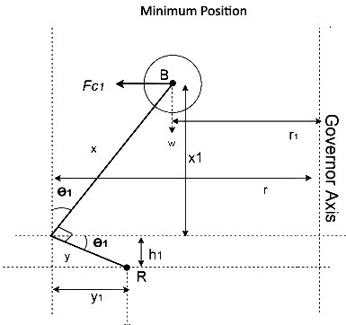

The simulation requires JavaScript to be enabled.
Hartnell Governor
Free Body Diagram

VARIABLES
m (kg)
n (rpm)
CONTROLS
Free Body Diagram
Minimum Position
Maximum Position
Copyright © SOLVE The Virtual Lab @ NITK Surathkal